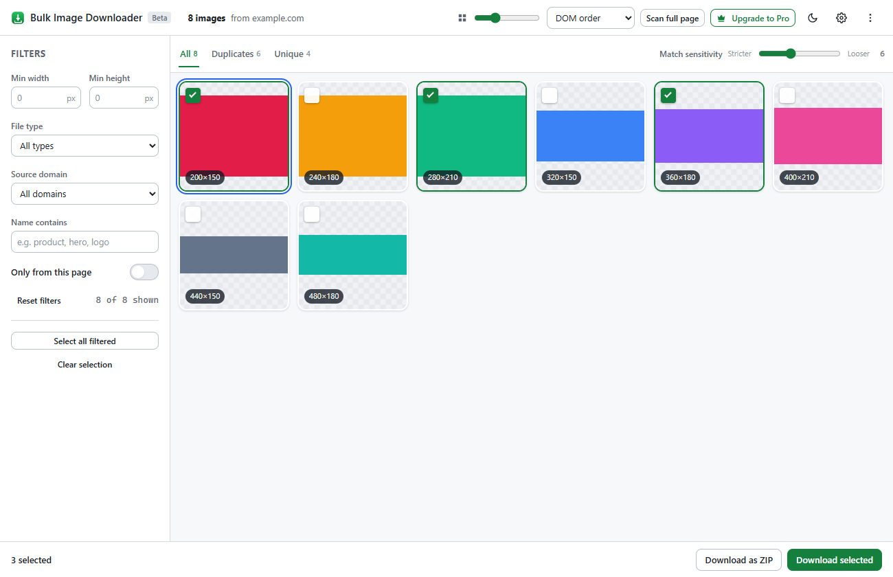
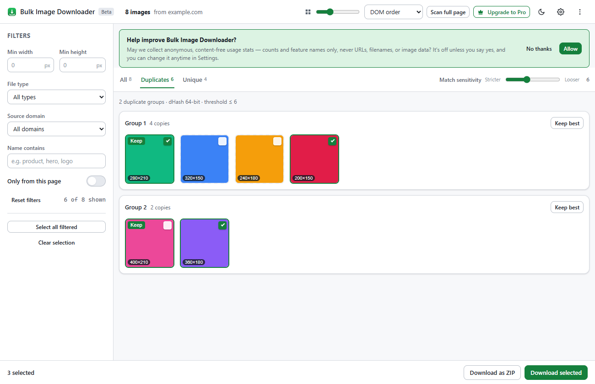

Save every image on a page. The right ones.
A Chrome extension that finds every image a page loads — even the lazy-loaded and CSS-background ones — then lets you filter, remove duplicates, and download your picks as files or a ZIP. It all runs on your device.
No account · no sign-up · works offline
STAGE 01 Deep page scan
Images hide in five places.
It checks all of them.
One click on the toolbar icon and the scanner walks the page — up to 25,000 elements — pulling images out of layers most downloaders never open. Keep scrolling to peel the page apart.
the obvious ones
largest resolution wins
styles, not markup
data-src waiting rooms
inside web components
STAGE 02 Precise filters · live demo
247 is too many.
Narrow it like you mean it.
Size, file type, source domain, filename — or flip “only from this page” and third-party clutter disappears. This is a working miniature of the real filter engine. Go ahead, move things.
STAGE 03 Perceptual de-duplication
Five copies walk in.
One walks out.
Every image gets a 64-bit perceptual fingerprint. Near-identical copies — resizes, re-compressions, small edits — land within a few bits of each other, so the extension groups them and keeps the best. Usually the largest. Sensitivity is adjustable.
dHash · Hamming distance ≤ 6
distance: 3 → DUPLICATE
Two fingerprints of the same photo at different sizes: 3 of 64 bits differ. Grouped.
distance: 31 → DIFFERENT
Two genuinely different photos: fingerprints disagree everywhere. Kept apart. Exact copies are also caught byte-for-byte with SHA-256.
STAGE 04 Download · single files or ZIP
Your picks, boxed
and handed over.
Download images one by one, or bundle the whole selection into a single archive — assembled by our own dependency-free ZIP writer, right in the tab. No server ever touches your files.
domain = example.com→Downloads/example/2026-08/
auto-sort downloads into subfolders by domain, date or size
NO MOCKUPS The actual tool
This is really it.
Straight screenshots of the extension scanning a test page — filters on the left, duplicate groups in the middle, ZIP button where you’d want it.


05 · LOCAL Privacy architecture
Your images never
leave your device.
There’s no account to create and no server to phone home to. The extension can’t even see a page until you click its icon on that tab — zero host permissions at install. It does its work locally and forgets everything when the tab closes.
Optional usage stats, if you turn them on, are anonymous and content-free — counts and feature names only, never URLs, filenames or image data.
INDEX FAQ
Questions, answered.
Q.01Is it free?+
Q.02Do you see my images?+
Q.03Which pages does it work on?+
Q.04Where do downloads go?+
Q.05How does de-duplication work?+
Q.06What permissions does it need?+
CONTACT SHEET From the workshop
Notes & negatives.
How perceptual hashing spots a duplicate
A plain-English tour of dHash and Hamming distance — how a 64-bit fingerprint tells two near-identical photos apart from two different ones.
6 MIN FR.02FEB 28 2026Downloading images responsibly
Rate limits, copyright, and being a good web citizen when you save a few hundred images at once.
4 MIN FR.01FEB 09 2026What a local-first extension can (and can’t) see
Our permission model in plain words: active-tab only, why we ask for one optional grant, and what “on-device” really means.
5 MINEND OF PIPELINE One click from here
Grab your first
batch.
Free during the beta. No account required.
Chrome · Edge & other Chromium browsers